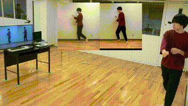

本研究では，プロフェッショナルなダンサーのダンスをマスターして踊る自身の映像を見ながらダンス動作を学習する学習支援手法を提案する．理想的な動作を行う自身の映像を見ることで行動の改善を促す「ビデオセルフモデリング」は，運動技能の学習においても有効とされる．しかし，理想的な動作を行なっている自身の映像を作成するには，多くの時間を割く必要があり手間がかかる．そこで，深層学習による映像生成技術を用いて参照動画中のダンサーの動作と同じ動作を行う学習者自身の映像を自動で生成し，その映像を見ることで学習者の学習を促す．生成した映像がダンス動作の学習に有効かどうかを検証するために参加者
20 名による評価実験を実施した．実験の結果，他者の映像を提示した場合と生成した自己映像を提示した場合とで有意差は見られなかったが，自己映像を提示したグループの方が，自己効力感が有意に低い傾向となった．これら実験結果を踏まえ，映像生成技術を活用したダンス動作の学習支援手法の可能性を示した．
- 土田 修平, Mao Haomin, 岡本 秀明, 鈴木 裕真, 金田 麟太郎, 堀 隆之, 寺田 努, 塚本 昌彦: ダンスをマスターした自身の映像を先に見ることによるダンス学習支援, 情報処理学会 研究報告ヒューマンコンピュータインタラクション（HCI), Vol. 6, pp. 1--8 (Mar. 2022).